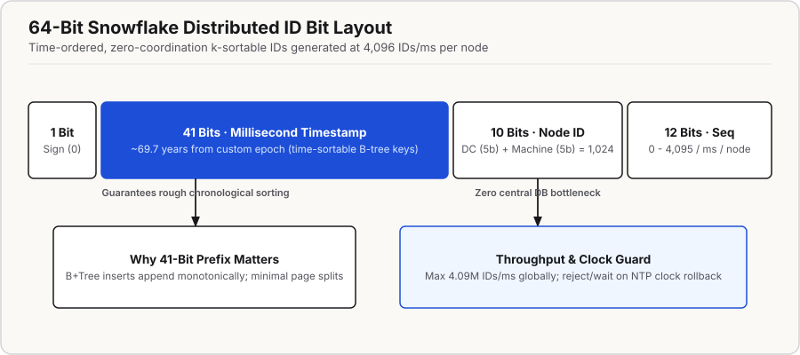

28 · Distributed Unique ID Generator
Part 0 · Foundations · ⏱️ ~20 min read · Prerequisites: None (Foundational)
🏢 Real-world case studies: how Twitter (Snowflake), Discord, and Instagram generate billions of unique IDs per day, in REAL_WORLD_EXAMPLES.md.
🧒 The 30-second version
In a traditional single SQL database, generating unique IDs is easy: you use an AUTO_INCREMENT primary key (1, 2, 3, …).
In a distributed system with 50 database shards and 100 API gateways across 3 continents, AUTO_INCREMENT fails:
- Two servers would generate the exact same ID (
1001) simultaneously, corrupting orders and accounts. - UUIDv4 generates random 128-bit strings, but they are not sortable by time and cause massive performance degradation in B-Tree database indexes.
The industry standard solution is Twitter Snowflake: a 64-bit integer composed of:
- 1 bit: Unused sign bit (always
0). - 41 bits: Millisecond timestamp (gives ~69 years of life).
- 10 bits: Machine / Worker ID (supports up to 1,024 servers).
- 12 bits: Sequence counter (allows each server to generate 4,096 IDs per millisecond).
🍕 Everyday analogy: Flight Ticket Confirmation Codes
Imagine airport ticket counters across London, Tokyo, and New York:
- If every counter simply handed out ticket
#1,#2,#3, passengers would show up with duplicate seat assignments. - Instead, airlines issue encoded confirmation codes:
[Date: 2026-11-23] - [Airport: HND] - [Terminal: 03] - [Sequence: 0042] - Counter 3 in Tokyo can print tickets at maximum speed without making a phone call to London to ask "What ticket number are you on?".
The ticket is globally unique, generated independently with zero coordination, and chronologically sortable.
🧩 The Problem It Solves
Why Alternative Approaches Fail:
- Multi-Master Auto-Increment (Step K):
- Server 1 generates $1, 3, 5, 7$; Server 2 generates $2, 4, 6, 8$.
- Failure: Cannot scale dynamically when adding a 3rd server without reconfiguring all existing database sequences. IDs are not sortable by time across servers.
- UUIDv4 (128-bit Random Strings):
- Example:
f47ac10b-58cc-4372-a567-0e02b2c3d479. - Failure: 128 bits is twice as large as a 64-bit integer. Random UUIDs cause B-tree index fragmentation (random disk page splits), degrading database write performance by up to 80%.
- Example:
- Ticket Server (Centralized Counter):
- A single dedicated Redis or MySQL server issuing
INCRIDs. - Failure: Single Point of Failure (SPOF). If the ticket server reboots or network partitions, all order creation worldwide halts.
- A single dedicated Redis or MySQL server issuing
🖼️ Picture It: The 64-Bit Snowflake Bit-Layout

flowchart LR
Sign["1 Bit<br/>Sign (0)"]
Time["41 Bits<br/>Timestamp (ms)<br/>~69 Years"]
Machine["10 Bits<br/>Datacenter / Worker ID<br/>1,024 Machines"]
Seq["12 Bits<br/>Sequence Number<br/>4,096 IDs / ms / node"]
Sign --- Time --- Machine --- Seq
style Sign fill:#161b22,stroke:#f85149,stroke-width:2px;
style Time fill:#161b22,stroke:#58a6ff,stroke-width:2px;
style Machine fill:#161b22,stroke:#d29922,stroke-width:2px;
style Seq fill:#161b22,stroke:#3fb950,stroke-width:2px;🔢 The Mathematics of Snowflake Bit-Allocation
1. Timestamp Component (41 Bits)
- Maximum value: 241 - 1 = 2,199,023,255,551 ms.
- Years of life:
- A custom epoch (e.g.,
2026-01-01) gives 69 years of runway before overflow.
2. Machine ID Component (10 Bits)
- Supports 210 = 1,024 distinct worker machines (or 5 bits Datacenter ID = 32 datacenters × 5 bits Worker ID = 32 workers per datacenter).
3. Sequence Number Component (12 Bits)
- Maximum value: 212 = 4,096 IDs per millisecond per node.
- Total theoretical cluster generation capacity:
⚙️ How It Works Under the Hood
When a client thread requests an ID from Worker W:
- Read the current system millisecond clock: Tnow.
- If Tnow == Tlast:
- Increment sequence counter: seq = (seq + 1) & 4095.
- If sequence overflows (4096 → 0 in the same millisecond), wait until the next millisecond.
- If Tnow > Tlast:
- Reset sequence counter to 0. Update Tlast = Tnow.
- Assemble 64-bit integer using bitwise left-shift operators:
⚖️ Trade-Offs & Decision Matrix
| Strategy | ID Size | Time Sortable | Scaling Coordination | Vulnerability |
|---|---|---|---|---|
| UUIDv4 | 128 Bits | ❌ No (Random) | Zero Coordination | B-Tree index fragmentation |
| UUIDv7 | 128 Bits | ✅ Yes (Timestamp prefix) | Zero Coordination | 128-bit storage footprint |
| Ticket Server | 64 Bits | ✅ Yes | Centralized Redis / DB | Single Point of Failure (SPOF) |
| Twitter Snowflake | 64 Bits | ✅ Yes | Zero Runtime Coordination | System clock rollback |
🚫 Common Mistakes & Production Pitfalls
- System Clock Drift & Rollback:
- Pitfall: NTP synchronizes server clocks backwards by 50ms.
- Result: The worker generates duplicate IDs that were already issued in the past!
- Fix: Detect clock skew:
if (now < last_timestamp): wait or raise error.
- JavaScript 53-Bit Precision Bug:
- Pitfall: JavaScript's
Number.MAX_SAFE_INTEGERis 253 - 1. - Result: Returning 64-bit Snowflake IDs as raw JSON integers causes web browsers to truncate the last few digits, corrupting IDs. Always serialize 64-bit Snowflake IDs as strings (
"179421839218201") in API responses.
- Pitfall: JavaScript's
💻 Try It Yourself
The companion script demo.py implements a production-grade 64-bit Snowflake generator running concurrently across multiple threads, verifying zero duplicates and monotonic time ordering.
Run it directly in your terminal:
python demo.py
🌍 Where You'll See It in Production
- Twitter / X: Every tweet, direct message, and user ID is an explicit 64-bit Snowflake integer.
- Discord: Uses Snowflake IDs for all messages, channels, and guild entities. Right-clicking any Discord message and clicking "Copy ID" gives you its Snowflake timestamp!
- Instagram: Uses an adapted 64-bit Snowflake variation partitioned across PostgreSQL tables using Postgres PL/pgSQL stored procedures.
🎯 Top 5 Interview Questions & Deep Answers
Q1: "Why does Twitter Snowflake use a 41-bit timestamp instead of standard 64-bit timestamps?"
💡 Click to reveal the ideal senior engineering answer
A 64-bit integer must fit the entire ID (Timestamp + Machine ID + Sequence). Allocating 41 bits to the timestamp relative to a custom epoch provides:
This leaves 23 bits free to encode the physical Datacenter/Worker ID (10 bits) and sequence number (12 bits), ensuring high-concurrency generation with zero cross-network coordination.
Q2: "How does a Snowflake generator handle NTP clock rollback?"
💡 Click to reveal the ideal senior engineering answer
If the system clock rolls backwards (e.g., NTP slew):
- Short skew (<5ms): The generator thread simply sleeps for the delta until Tnow ≥ Tlast.
- Large skew (>5ms): The generator refuses to mint IDs and throws an error or fails over to a backup worker node to preserve the strict uniqueness invariant.
Q3: "What is B-tree index fragmentation, and why does UUIDv4 cause it?"
💡 Click to reveal the ideal senior engineering answer
Relational database primary keys are organized as B+ Trees stored in fixed-size disk pages (e.g. 16KB). Because UUIDv4 is completely random:
- Inserts land randomly in any leaf page on disk.
- When an insert hits an already full page, the database must execute an expensive Page Split (allocating a new page and moving 50% of keys), causing random disk I/O, low page fill factor (50%), and memory cache thrashing.
- Time-sortable IDs (Snowflake, UUIDv7) append sequentially to the rightmost leaf page, achieving maximum sequential I/O and zero page fragmentation.
Q4: "How does Instagram's unique ID generation differ from Twitter Snowflake?"
💡 Click to reveal the ideal senior engineering answer
Instagram adopted Snowflake principles directly inside PostgreSQL:
- 41 bits: Millisecond timestamp relative to custom Instagram epoch.
- 13 bits: Logical Shard ID (supports 8,192 logical database shards).
- 10 bits: Auto-increment sequence per table mod 1,024. Instagram implemented this inside PL/pgSQL stored procedures, so database row inserts generate their own unique ID automatically.
Q5: "When would you pick UUIDv7 over Twitter Snowflake?"
💡 Click to reveal the ideal senior engineering answer
- Pick Twitter Snowflake when 64-bit integer performance, compact memory footprint, and high generation throughput (>4M IDs/sec) are critical.
- Pick UUIDv7 when you need a standardized 128-bit time-ordered UUID without managing centralized worker ID allocations or Zookeeper node registrations.
📚 Go Deeper
- System Design Interview – An Insider's Guide (Volume 1) by Alex Xu: Chapter 7 (Design a Unique ID Generator in Distributed Systems).
- Twitter Engineering Blog: Announcing Snowflake (blog.twitter.com).